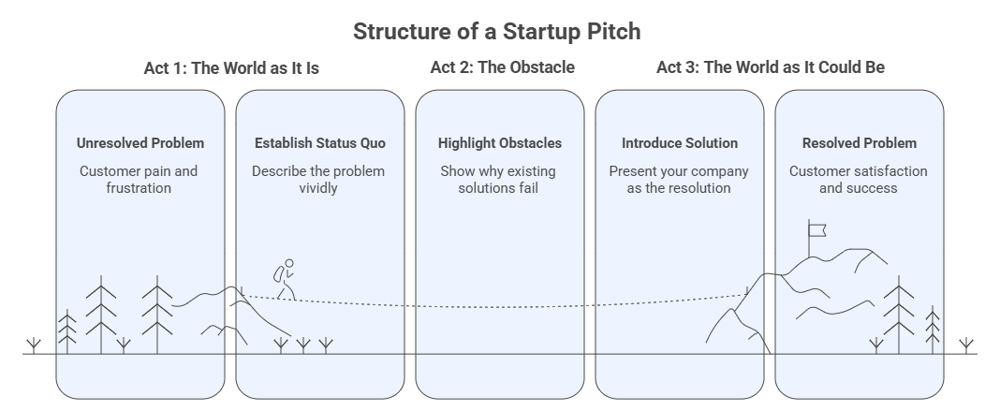
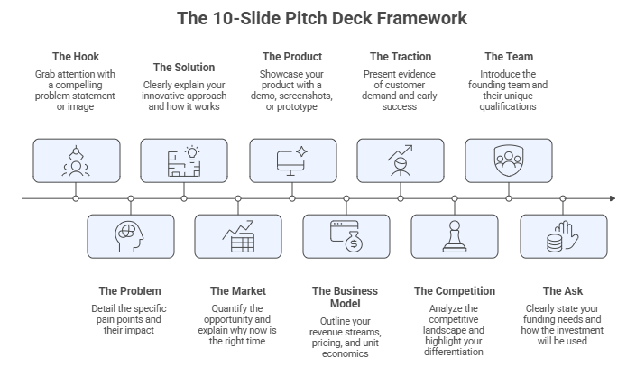

Session 4: From Plan to Pitch with AI#
Blueprint Piece: Elevator Pitch + Pitch Deck Draft
Session Overview#
Block |
Topic |
|---|---|
Workspace warm-up |
Feed all Blueprint Pieces + final AI cofounder briefing |
4.1 |
The Art of Entrepreneurial Storytelling |
4.2 |
Building Your Pitch Deck with AI |
4.3 |
Your Elevator Pitch |
4.4 |
Delivery, Q&A, and Objection Handling with AI |
📋 |
Blueprint Checkpoint 4 + Blueprint Assembly |
Workspace Warm-Up#
Before starting this session, confirm that all three Blueprint pieces are loaded into both your AI Cofounder Workspace and your Personalized Assistant’s knowledge base. Then send this to your Workspace:
Reference Prompt:
You now have the complete picture of my company: our strategy, our customer, and our
business model. Today I need to tell this story compellingly to investors, partners,
or future customers. Before we start building the pitch, give me a one-paragraph
"outsider's read" of my company as you understand it right now. Then tell me the one
thing about this company that you think is most compelling, and the one thing that
needs the most work before I pitch it.
This “outsider’s read” is one of the most valuable things a well-briefed AI cofounder can give you: a clear-eyed synthesis of everything you have built, from a fresh perspective.
4.1 The Art of Entrepreneurial Storytelling#
A pitch is not a summary of your business plan. It is a story, one that makes a specific audience feel the urgency of the problem, believe in the uniqueness of your solution, and want to be part of your journey. The most technically sound business plan, delivered as a dry recitation of facts, will lose to a mediocre plan told as a compelling narrative.
This is not a soft skill. It is the founder’s most important strategic communication capability.
Why Storytelling Works#
Human brains are wired for narrative. When we encounter a well-structured story, such as a relatable protagonist, a genuine obstacle, or a transformative resolution, our attention sharpens, our skepticism softens, and our memory retains the information. Investors see hundreds of pitches. The ones they remember are the ones that made them feel something about a problem.
The three-act structure of a startup pitch:
Act 1 — The World as It Is: Establish the status quo. Describe the problem in vivid, specific terms. Make the audience feel the pain of your target customer.
Act 2 — The Obstacle: Show why existing solutions fail. This is where you create the tension that makes your company necessary.
Act 3 — The World as It Could Be: Introduce your solution as the resolution. Show the market opportunity, the business model, the team. Ask for what you need.

The Founder’s Story#
Many of the most powerful pitches are anchored in the founder’s personal connection to the problem, the moment they experienced the pain firsthand, or the insight that revealed the gap no one else had seen. If that story exists for you, it belongs near the beginning of your pitch.
Reference Prompt:
Based on my company concept, help me draft the opening 90 seconds of my pitch; the
"hook" that establishes the problem in vivid, specific terms. I want the audience to
feel the pain before I mention my solution. Give me three alternative opening narratives:
one data-driven, one story-driven (a specific customer's experience), and one
provocative (a counterintuitive claim about the market). Then recommend which one
creates the strongest opening for my specific context.
4.2 Building Your Pitch Deck with AI#
The pitch deck is the founder’s primary communication artifact, a structured visual presentation that tells your company’s story to investors, partners, or potential customers. The standard format is 10–12 slides, each serving a specific narrative purpose.
The 10-Slide Pitch Deck Framework#
Slide |
Title |
What It Must Communicate |
|---|---|---|
1 |
The Hook |
The problem, in one sentence or image that creates immediate resonance |
2 |
The Problem |
Specific, vivid description of the pain, its scope, frequency, and cost to the customer |
3 |
The Solution |
Your approach, what you do and how it works, simply explained |
4 |
The Market |
TAM, SAM, SOM: the size of the opportunity and why now |
5 |
The Product |
A demo, screenshot, or prototype. Show, don’t just tell |
6 |
The Business Model |
How you make money: revenue streams, pricing, unit economics |
7 |
The Traction |
Evidence that customers want this, such as pilots, revenue, sign-ups, letters of intent |
8 |
The Competition |
The competitive landscape, and your differentiated position in it |
9 |
The Team |
Why you, that is, what makes this founding team uniquely suited to win |
10 |
The Ask |
What you need and exactly how you will use it |

Building Each Slide with AI#
Work through your pitch deck slide by slide using your AI Cofounder Workspace. The prompts below generate the content for each slide, but remember: you review, refine, and own every word before it appears on a slide.
Slide 1 & 2: Hook and Problem
Reference Prompt:
Write the content for my Problem slide. It should:
1. Open with a single, powerful statement or statistic that establishes the scale of
the problem.
2. Follow with a specific scenario — one person's experience of this problem — that
makes it concrete and human.
3. Close with the cost of the problem going unsolved (financial, time, emotional).
Aim for language that would resonate with a [investor / partner / customer] audience.
Keep it to what would fit on a single slide — no more than 80 words of body text.
Slide 3: Solution
Reference Prompt:
Write the content for my Solution slide. It should:
1. Introduce my solution in one clear sentence — what it does and for whom.
2. Explain the mechanism — how it works, without jargon.
3. State the key benefit in terms of the customer outcome, not the product feature.
Then suggest one visual or diagram concept (not the visual itself — just a description
of what it should show) that would make this slide more compelling.
Slide 4: Market
Reference Prompt:
Help me build the Market slide for my pitch deck.
1. Estimate my TAM (Total Addressable Market), SAM (Serviceable Addressable Market),
and SOM (Serviceable Obtainable Market) for my specific concept.
2. Provide a credible data source or methodology I can cite for each estimate.
3. Add a one-sentence answer to "Why now?" — what market trend, technology shift, or
behavioral change makes this the right moment for my company.
Be explicit about your assumptions and flag any that I should verify with primary
research.
Slide 5: Product
This slide requires your own screenshots, mockups, or demo content. AI can help you describe what to show, but the visuals must come from your actual product or prototype.
Reference Prompt:
I need to design my Product slide. Suggest the single most compelling thing I could
show on this slide — a specific screen, a workflow, or a before/after comparison —
that would best demonstrate the core value my product delivers. Then write the caption
or supporting text that would make this visual land with maximum impact.
Slide 6: Business Model
Reference Prompt:
Write the content for my Business Model slide based on the BMC we completed in
Session 3. Include:
1. The primary revenue model (one sentence).
2. The pricing structure (specific numbers or ranges).
3. One key unit economics metric (LTV, CAC, or margin) that shows the model's
fundamental health.
Present this as bullet points that would fit on a single slide — clear, specific, and
investor-ready.
Slide 7: Traction
Traction is your strongest asset if you have it — and your most important story to tell if you are still pre-traction.
Reference Prompt:
I am at the [pre-traction / early-traction] stage. Help me build my Traction slide.
If pre-traction: What early signals — letters of intent, waitlist numbers, pilot
conversations, advisory relationships, research findings — could I present as evidence
of demand? How should I frame them honestly without overstating them?
If early-traction: Help me identify which of my current metrics are most compelling
to a seed-stage investor, and how to present them in a way that shows trajectory, not
just a snapshot.
Slide 8: Competition
Reference Prompt:
Build my competitive landscape analysis for the pitch deck. Identify the 5 most
relevant competitors or alternatives my customers currently use. For each, describe:
their core offering, their primary customer, and their key weakness relative to my
solution. Then suggest how I should position my company on a 2x2 competitive matrix —
recommend the two axes that best highlight my differentiation, and place me and my
top 3 competitors on the matrix.
Slide 9: Team
This is the most human slide in the deck. AI can help you structure it, but the content must be authentic to you and your team.
Reference Prompt:
Help me write the Team slide narrative. Based on what you know about my background —
[briefly describe your relevant experience, domain knowledge, and any co-founders] —
write a 3-sentence "why us" statement that honestly and compellingly makes the case
that this team is uniquely suited to build and scale this company. Then identify any
gaps in the founding team's skill set that I should acknowledge and address.
Slide 10: The Ask
Reference Prompt:
Based on my business model and current stage, help me determine and frame my funding
ask. Specifically:
1. What is a realistic funding amount for my stage and concept?
2. What are the 3–4 specific milestones I would use this funding to reach?
3. How should I describe what I am looking for beyond money — what kind of investor,
partner, or advisor do I most need?
Write this as the final slide of my pitch deck — a clear, confident closing that tells
the audience exactly what I need and why now.
4.3 Your Elevator Pitch#
The elevator pitch is a 60-second spoken version of your company’s story, named for the scenario where you find yourself in an elevator with a potential investor and have only until they reach their floor to make your case. In practice, it is the version of your pitch you use at networking events, casual conversations, and any moment when you need to create interest quickly without a deck.
The Elevator Pitch Structure#
Component |
Time |
Content |
|---|---|---|
Hook |
10 sec |
A surprising fact, question, or statement that creates immediate interest |
Problem |
15 sec |
The pain point — specific, human, felt |
Solution |
15 sec |
What you do, for whom, in one clear sentence |
Traction / Proof |
10 sec |
The one signal that shows this is real |
Ask / Call to action |
10 sec |
What you want from this specific conversation |
Reference Prompt:
Write three versions of my 60-second elevator pitch:
1. For an investor at a networking event.
2. For a potential customer at an industry conference.
3. For a potential advisor or partner being approached for the first time.
Each version should use the same core story but adapt the emphasis and ask to the
audience. Keep each to approximately 120 words (readable in 60 seconds at a natural
speaking pace). Then tell me which version you think is strongest and what makes it
work.
4.4 Delivery, Q&A, and Objection Handling with AI#
Having great content on slides is necessary but not sufficient. Investors fund founders, not decks. How you deliver your pitch, your confidence, clarity, pacing, and ability to handle hard questions, is as important as what is on the page.
AI-Assisted Delivery Practice#
Reference Prompt:
I am going to practice my elevator pitch. I will deliver it to you in text. After I
finish, evaluate it on four dimensions: (1) Clarity: was the business concept
immediately understandable? (2) Urgency: did it convey why this problem matters now?
(3) Credibility: did it establish that I am the right person to build this? (4)
Call to action: was the ask clear and specific? Give me a score of 1–5 on each
dimension and suggest one specific improvement for each.
Anticipating Investor Questions#
Every experienced investor has a standard set of challenges for every early-stage pitch. Preparing for these in advance, and practicing your answers, is the highest-leverage pitch preparation activity you can do.
Reference Prompt:
You are a skeptical but fair seed-stage investor. I have just finished pitching my
company. Ask me the 8 hardest questions an investor in my space would realistically
ask — questions about my market assumptions, competition, business model, team gaps,
and key risks. Ask them one at a time and wait for my answer before asking the next.
After all 8, give me overall feedback on the quality and completeness of my responses.
The Five Most Common Investor Objections for AI Startups#
Be prepared for these category-specific challenges:
“How is this defensible? Any competitor could build the same thing on top of the same APIs.” Prepare: Articulate your moat, such as proprietary data, network effects, brand trust, workflow lock-in, or domain expertise that compounds over time.
“What happens when OpenAI / Google / Microsoft builds this feature natively?” Prepare: Explain your specific customer relationship, vertical depth, or data advantage that a general-purpose platform cannot easily replicate.
“The AI outputs are unreliable. How do you ensure quality?” Prepare: Describe your quality control mechanisms: human-in-the-loop processes, output evaluation frameworks, and your approach to errors and hallucinations.
“How are you thinking about the regulatory risk in AI?” Prepare: Demonstrate that you have thought carefully about applicable regulations (EU AI Act, US state laws, sector-specific rules) and have a compliance strategy.
“Why do customers trust you with their data?” Prepare: Articulate your data privacy commitments, security practices, and any certifications or compliance frameworks you adhere to.
Reference Prompt:
For each of the five common investor objections listed above, draft a 3–4 sentence
response specific to my company concept. The response should be honest — acknowledge
the genuine risk — while clearly articulating why it is manageable or why I have a
meaningful advantage. Do not paper over real weaknesses.
📋 Blueprint Checkpoint 4: Elevator Pitch + Pitch Deck Draft#
At the end of this session, compile the fourth and final piece of your AI Company Blueprint.
Elevator Pitch:
60-second pitch script (investor version)
60-second pitch script (customer version)
Pitch Deck Draft:
Slide-by-slide content outline (all 10 slides)
Notes on visuals or demos needed for Slides 5 and 8
Investor Q&A preparation (top 8 questions + your answers)
4.5 Your Personalized Assistant: Final Configuration#
By the end of this session, your Personalized Assistant will have received all four Blueprint pieces as knowledge, making it the most complete AI representation of your startup that exists. This is the moment to finalize its configuration and verify that it can perform the three key roles it will play after the program ends.
The Three Roles of Your Startup’s AI Cofounder#
Role 1: Investor Q&A Partner
Test your assistant with the five most common investor questions:
Test your Personalized Assistant:
1. "What problem does your company solve, and how big is the market?"
2. "Why is your solution better than what already exists?"
3. "How do you make money?"
4. "What traction do you have so far?"
5. "Why is this team the right one to build this?"
Evaluate: Are the answers accurate, specific, and compelling? Do they reflect your actual Blueprint, or generic placeholders? Refine the knowledge base or instructions until each answer would satisfy a real investor.
Role 2: Customer-Facing Explainer
Test your assistant with the questions a curious potential customer would ask:
Test your Personalized Assistant:
1. "What exactly does your product do?"
2. "Is this right for someone in my situation — [describe your target customer]?"
3. "What does it cost and how do I get started?"
Evaluate: Are the answers clear, jargon-free, and benefit-focused? Does the assistant stay in the customer’s frame of reference rather than slipping into founder language?
Role 3: Team Onboarding Brief
Test your assistant as a onboarding resource for a new collaborator or team member:
Test your Personalized Assistant:
1. "Give me a two-minute overview of this company — mission, customer, and model."
2. "What are our core values and how do they show up in how we work?"
3. "What stage are we at and what are we focused on right now?"
Evaluate: Does the assistant give a coherent, consistent picture of the company? Would a new team member feel oriented after reading these answers?
Final Instructions Refinement#
After running all three role tests, update your system instructions one final time. Add a section at the bottom of your instructions called “Known limitations” — a brief honest note about what the assistant does not yet know or should not answer on behalf of the company (e.g., pricing details not finalized, legal terms, specific hiring decisions). This protects you from the assistant over-promising on your behalf.
Note
Your Personalized Assistant is a living artifact. It is not finished when this program ends, it improves every time you update it with new company information, refine its instructions based on how real users interact with it, or expand its knowledge base as your startup evolves. Think of it as a product you are shipping in beta on Day 1.
📋 Assembling Your AI Company Blueprint#
Congratulations! You have now completed all four pieces of your AI Company Blueprint. The final step is to assemble them into a single coherent document and have your AI cofounder review it as a whole.
Final Workspace prompt — Blueprint Review:
You have been my AI cofounder throughout this entire planning process. You have access
to all four pieces of my AI Company Blueprint:
1. Strategic Positioning Statement
2. Customer Persona + Value Proposition Canvas
3. Business Model Canvas
4. Elevator Pitch + Pitch Deck Draft
I want you to conduct a final Blueprint Review. Specifically:
1. Does the story hold together? Does each piece logically build on the previous one,
or are there internal contradictions?
2. What is the single strongest element of this Blueprint — the thing most likely to
resonate with investors or partners?
3. What is the single most significant gap or risk that I should address before
presenting this to an external audience?
4. Write a one-paragraph executive summary of my company as described in this Blueprint —
the kind a knowledgeable advisor would write to introduce me to a potential investor.
This final prompt is the capstone of your AI cofounder relationship in this program. Read the response carefully and critically. It is a mirror of the thinking you have done over the four sessions.
⚙️ CW 4.1 — Pitch Build and Practice#
Part 1 — Pitch Deck Draft (20 minutes)
Working in your AI Cofounder Workspace, build your 10-slide pitch deck outline using the prompts in section 4.2. Focus on Slides 1–3 (Hook, Problem, Solution) and Slide 10 (Ask) as your minimum output. Complete the remaining slides as time allows.
Part 2 — Elevator Pitch Practice (15 minutes)
Draft your 60-second investor elevator pitch using section 4.3. Practice delivering it out loud twice before submitting it for peer feedback. Use the AI evaluation prompt to get a structured critique before presenting to the group.
Part 3 — Blueprint Assembly (15 minutes)
Run the Final Blueprint Review prompt from section 📋 above. Read the executive summary aloud to a partner and discuss: Does it capture your company accurately? Is there anything you would change?
Further Reading#
Kawasaki, G. (2015). The Art of the Start 2.0. Portfolio/Penguin.
Horowitz, B. (2014). The Hard Thing About Hard Things. HarperBusiness.
Thiel, P. (2014). Zero to One. Crown Business.
Graham, P. (2013). Do Things That Don’t Scale. paulgraham.com
Sequoia Capital. (2022). Writing a Business Plan. sequoiacap.com/article/writing-a-business-plan